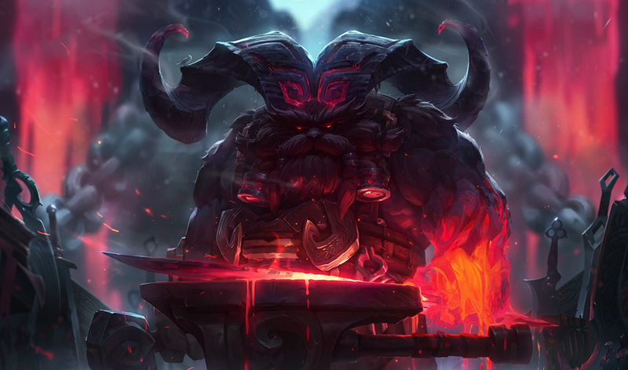

Ornn

Ornn on tankki hahmo
Vahvuudet
- Kestävä
- Korkea CC
Heikkoudet
- Riippuvainen tiimistä
Hauskoja faktoja
Ornn on yksi hahmoista joilla on suurin base AD
Hahmoja joilla on korkeimmat base AD:t
-
69
- Renekton
- Cho'Gath
- Ornn
- Garen
-
68
- Talon
- Camille
- Kayn
- Sion
- Trundle
- Olaf
- Rengar
- Jax
Skill level up order
| 1 | 2 | 3 | 4 | 5 | 6 | 7 | 8 | 9 | 10 | 11 | 12 | 13 | 14 | 15 | 16 | 17 | 18 | |
|---|---|---|---|---|---|---|---|---|---|---|---|---|---|---|---|---|---|---|
| Q | X | X | X | X | X | |||||||||||||
| W | X | X | X | X | X | |||||||||||||
| E | X | X | X | X | X | |||||||||||||
| R | X | X | X |
Parhaat lainaukset
I made this hammer. It was so good I named it... 'Hammer.'
Termistö
- HP
- Health points eli hahmon elinvoima pisteet
- AD
- Attack Damage eli hyökkäysvoima
- base X
- Määrä asiaa X ilman ulkoisia lisiä
- Ability
- toiminta jonka hahmo pystyy tehdä
- CC
- Crowd Control eli taidot jotka estävät hahmojen liikkumista